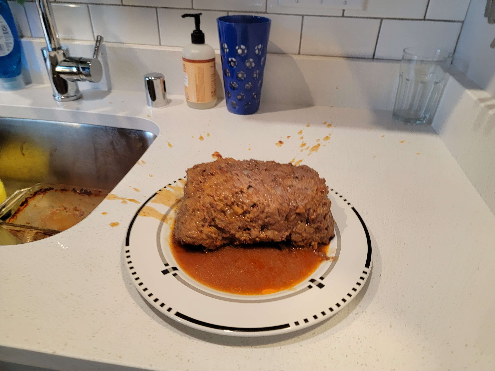

Conceived Saturday, July 15, 2023 11:21 AM
Amount of food created: Five meals, if accompanied with rice and spinach.
Costs: about $11.78 to make this recipe once, meaning six meals at a total of around $2.36 per meal.
This recipe is dedicated to a friend of mine named Ben. He once sent me a meatloaf recipe that used a box of stuffing as an ingredient, and as a college student I began to consider the concept of cheap and easy meals. To this point, the recipe book has been structured for price efficiency, but I believe that it also requires a rating based on ease of preparation, as I will be a full time college student/part-time Data Scientist\part-time TA as the year continues on. It doesn't matter that I left a robot corpse on his desk, I still respect Ben greatly and it's strange that the only place I may ever say or write that is in a meatloaf recipe.
1. Preheat the oven to 350 degrees, and grease the meatloaf dish
2. Chop a cup of onion
3. Within a large mixing bowl, mix together dry stuffing mix, the ground turkey, the eggs, the water, the onion, and only half of the sauce of choice(ex: ketchup). Do not use all the sauce on this step. Please.
4. Place the fully prepared mix into the dish, smooth it down evenly with your hands. Then cover it with the remaining ketchup/sauce of choice.
1. Place the meatloaf in the oven for around 45-60 minutes at the preheated temperature of 350. Go and do your homework.
2. Remove from dish and enjoy! See attached picture for how not to remove a meatloaf from a tray.
Then go back to doing your homework, you college student.